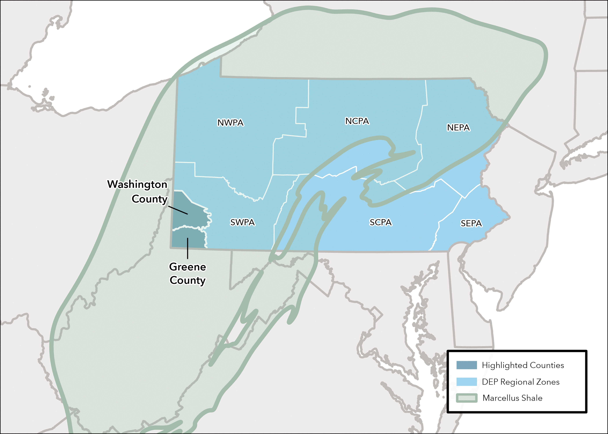
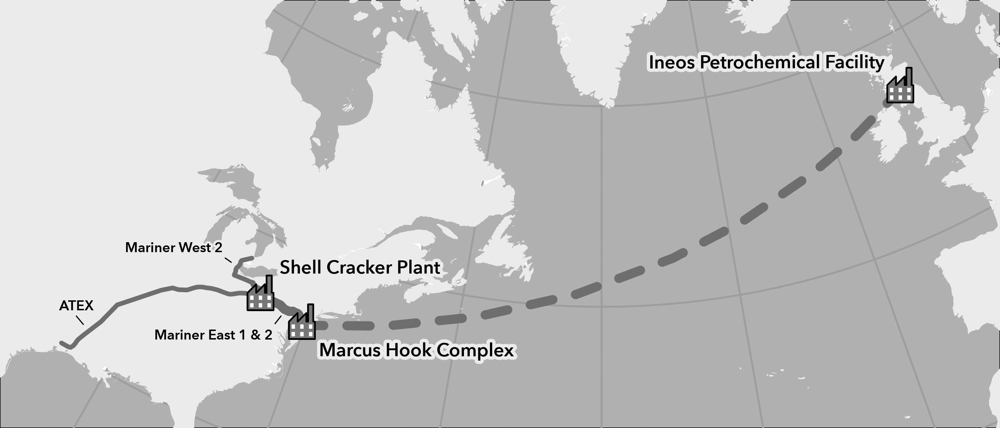
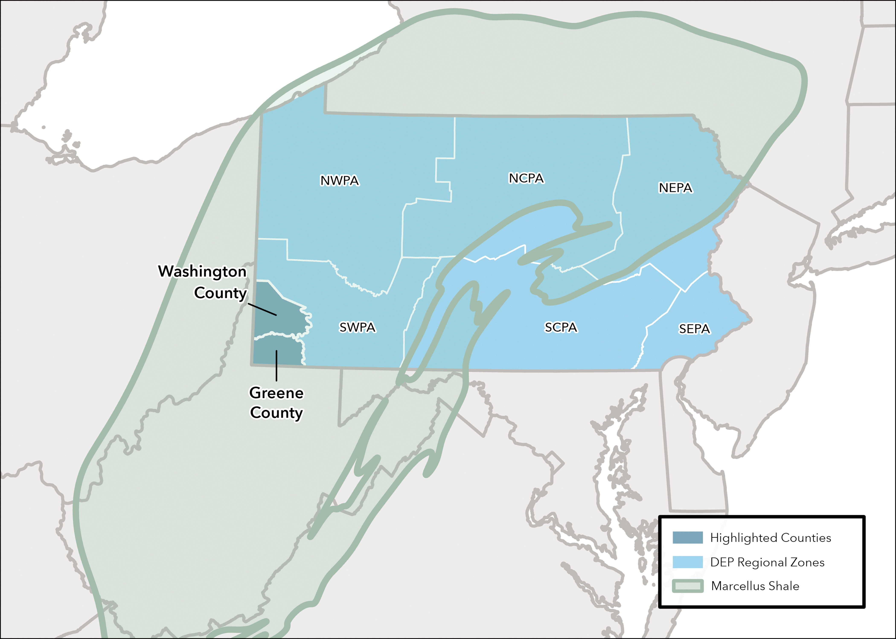
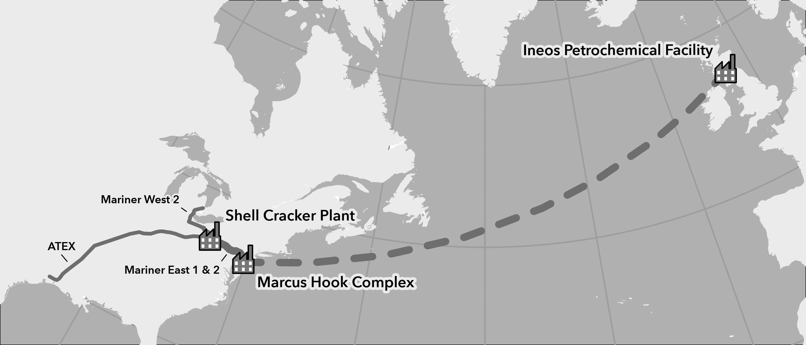

project information
 



energy infrastructure in western pennsylvania
client: professor jenn baka (penn state university)
description: a series of maps created to support 2025 article written by professor jenn baka titled Cracking Appalachia: A Political-Industrial Ecology Perspective. the maps provide context for the extent of the marcellus shale in pennsylvania, the inter-connectedness of natural gas around the world, and how much infrastructure has been built up in western pennsylvania to support natural gas production.
software used: arcgis pro